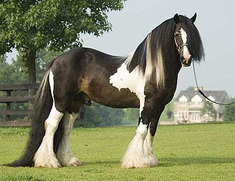
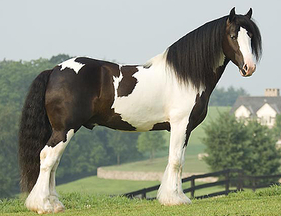
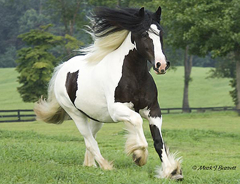
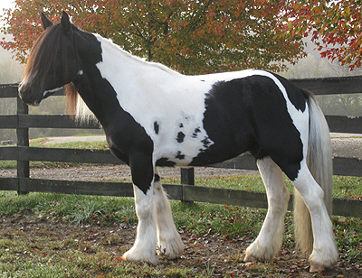
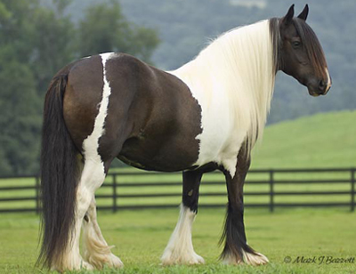
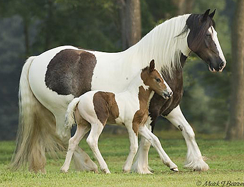

Our Stallions
Nightshades Gypsy King

2004 14.3hh Black Tobiano Gypsy Vanner Stallion
Sired by: Gallant Warrior (The Gypsy King)
Out Of: Cindy Charme LD (Mickey Lee)
Sired by: Gallant Warrior (The Gypsy King)
Out Of: Cindy Charme LD (Mickey Lee)
Nightshades Gypsy Knight

2002 15.0hh Black Tobiano Gypsy Vanner Stallion
Sired by: Cushti Bok (The Old Horse Of Wales)
Out Of: Gypsy Golds Rexie (Gypsy King)
Sired by: Cushti Bok (The Old Horse Of Wales)
Out Of: Gypsy Golds Rexie (Gypsy King)
Nightshades Gypsy Prince

2008 14.2hh Black Tobiano Gypsy Vanner Stallion
Sired by: Nightshades Gypsy Prince (Gallant Warrior)
Out Of: Nightshades Gypsy Queen (The Lob Eared Horse)
Sired by: Nightshades Gypsy Prince (Gallant Warrior)
Out Of: Nightshades Gypsy Queen (The Lob Eared Horse)
Nightshades Gypsy Lad

2008 14.3hh Black Tobiano Gypsy Vanner Stallion
Sired by: Gladstone of Bayhaven (Rocky)
Out Of: Harkaway Tansey (Mcgynley Stallion)
Sired by: Gladstone of Bayhaven (Rocky)
Out Of: Harkaway Tansey (Mcgynley Stallion)
Our Mares
Nightshades Gypsy Queen

2008 14.3hh Black Tobiano Gypsy Vanner Mare
Sired by: The Lob Eared Horse (HCS White Horse)
Out Of: Sundance Storm (Sun Dance Kid)
Sired by: The Lob Eared Horse (HCS White Horse)
Out Of: Sundance Storm (Sun Dance Kid)
Nightshades Gypsy Lady

2008 14.3hh Black Tobiano Gypsy Vanner Mare
Sired by: Sterling Spring Call Me Sir (Nero AKA Jim)
Out Of: WR Rose Petal (The Lion King)
Sired by: Sterling Spring Call Me Sir (Nero AKA Jim)
Out Of: WR Rose Petal (The Lion King)